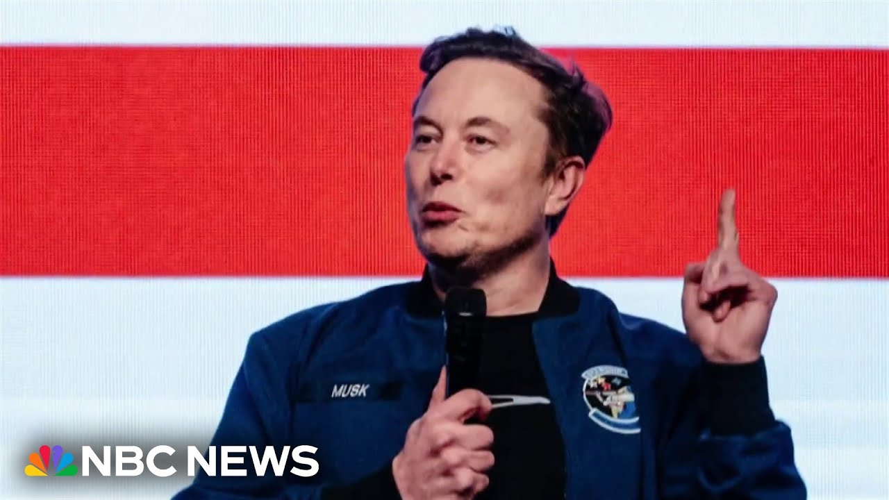

【埃隆·马斯克宣布成立新政党】
Summary: Elon Musk announces the formation of a new political party, criticizing the current system as a one-party rule and pledging to restore freedom. The move follows his feud with President Trump over a controversial domestic policy bill.
摘要： 埃隆·马斯克宣布成立新政党，批评现行体制为一党统治，并承诺恢复自由。此举源于他与特朗普总统就一项有争议的国内政策法案产生的分歧。

⏱️ Estimated Reading Time: 3 min
📚 四级生词 📚 六级生词 📚 雅思生词 📚 托福生词 📚 专八生词 📚 SAT生词 📚 考研生词 📚 GRE生词 📚 高考生词 📚 其它生词生词
Tonight, on the heels of President Trump signing his massive domestic policy bill into law, his former close ally, Elon Musk, announcing the formation of a new political party.
今晚，在特朗普总统签署大规模国内政策法案成为法律后，他曾经的亲密盟友埃隆·马斯克宣布成立一个新政党。
Musk, the world's richest person, taking to his social media site X to say, we live in a one-party system, not a democracy.
世界首富马斯克在其社交媒体平台X上发文称，我们生活在一党制而非民主制度中。
Today, the America Party is formed to give you back your freedom.
今天，美国党成立，旨在归还你们的自由。
Musk, who is President Trump's top campaign donor, has been feuding with the president over the so-called one-big-beautiful bill, which the non-partisan Congressional Budget Office says will add more than $3 trillion to the national debt over the next 10 years.
作为特朗普总统的头号竞选捐助者，马斯克与总统就所谓的“一揽子美好法案”发生争执。无党派的国会预算办公室称，该法案将在未来十年增加超过3万亿美元的国债。
Musk has referred to the legislation as a debt-slavery bill and had been teasing a new political party for days.
马斯克将该法案称为“债务奴役法案”，并连日来暗示将成立新政党。
The Tesla CEO did not respond to questions from NBC News seeking clarity about today's announcement.
特斯拉CEO未回应NBC新闻就今日声明寻求澄清的提问。
The stock market said an all-time high.
股市创下历史新高。
For his part, President Trump has been celebrating the bill.
特朗普总统则庆祝该法案的通过。
The legislation extends the tax cuts from his first term, reduces taxes on tips and overtime pay, and provides funds for his immigration priorities.
该法案延长了他第一任期的减税政策，降低小费和加班收入的税率，并为他的移民优先事项提供资金。
It also makes some of the biggest cuts in history to social safety net programs like Medicaid and food assistance.
该法案还对医疗补助和食品援助等社会安全网项目进行了史上最大规模的削减。
In Missouri, Kimberly Gallagher is worried about how the bill's new work requirements could affect her and her son's access to Medicaid.
在密苏里州，金伯利·加拉格尔担心法案的新工作要求会影响她和儿子获得医疗补助的资格。
Her son, Daniel, has a rare genetic disorder and autism, and she is his primary caregiver.
她的儿子丹尼尔患有罕见遗传病和自闭症，她是他的主要照顾者。
Medicaid is in every facet of our life.
医疗补助贯穿我们生活的方方面面。
It's not just medical, it's financial, it's care, and to lose any of those parts would drastically change our lives.
它不仅是医疗，还涉及财务和护理，失去任何部分都将彻底改变我们的生活。
Yamiche is traveling with the president tonight.
亚米切今晚随总统出行。
Yamiche, going back to Elon Musk's announcement of a new political party, what could his approach be here?
亚米切，回到埃隆·马斯克宣布新政党的话题，他可能采取什么策略？
Well, Jose, we should note, it's not clear at this point if Elon Musk has officially filed paperwork to start the America party, but he has said that a new party could target just a handful of seats in Congress and then act as a deciding vote on key laws.
何塞，需要注意的是，目前尚不清楚马斯克是否已正式提交文件成立美国党，但他表示新政党可能瞄准国会少数席位，并在关键法案中充当决定性投票。
Jose? Yamiche, I'll send door in New Jersey with the president.
何塞？亚米切，我将随总统前往新泽西州。
Thank you so much.
非常感谢。
We thank you for watching and remember, stay updated on breaking news and top stories on the NBC News app or watch live on our YouTube channel.
感谢收看，请记住，通过NBC新闻应用或我们的YouTube频道直播随时了解突发新闻和头条新闻。
We thank you for watching and we'll see you next time.
感谢收看，下次再见。